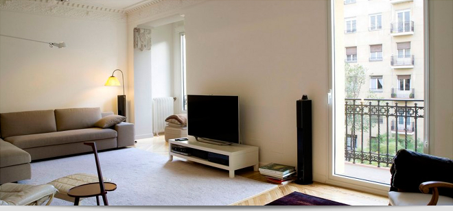

Как снять квартиру?
Самая лучшая квартира - это своя квартира! Тем не менее Вы решили снять квартиру, первое что нужно решить это воспользоваться услугами риелтора или искать самостоятельно. В каждом из этих вариантов есть свои плюсы и минусы. Мы постараемся наиболее объективно рассмотреть и ответить все эти вопросы.
- Самостоятельно. Безусловно Вы сэкономите на риелторских услугах, но бесплатно ничего не бывает, Вам будет необходимо обрабатывать большое количество информации (Интернет, газеты ) где 90-95 % объявлений это посредники, но и это не все, самый большой минус в том, что параллельно с Вами эти варианты ищут посредники и агентства и Вы невольно становитесь участником гонки.
- С риелтором. В агентствах работающих длительное время на рынке есть хорошая база данных в которой большой выбор квартир которые не публикуются в газетах и Интернете, варианты квартир которых нет в объявлениях. В этом случае Вам прийдется оплатить услуги риелтора.
Независимо от того ищите Вы квартиру самостоятельно или с риелтором, первое с чем Вы должны определиться – это то что Вы ищете? И самое главное, расставить приоритеты выбора, учитывая пожелания всех членов семьи, кто будет с Вами жить. Это поможет съэкономить Ваше время и нервы.
Например:
- Цена
- Местоположение (Цена квартиры расположенной в центре города может стоить на 30% дороже, чем аналогичный вариант на жил массиве или околоцентральном районе)
- Количество комнат
- Состояние квартиры (косметический ремонт, евроремонт)
Самый лучший способ съэкономить время это посмотреть фотографии квартиры, если такой возможности нет, то попытайтесь наиболее подробно расспросить о состоянии квартиры, для этого существует ряд шаблонных вопросов.
- Этаж
- Как давно делали ремонт.
- Окна (м/п окна, обычные, натуральное дерево)
- Санузел (обои, покраска, кафель СССР/современный)
- Пол (линолеум, ламинат, ПХВ, паркет)
- Мебель (80-х, 90-х, современная)
- Наличие техники (ТВ, холодильник, бойлер/колонка, стиральная машина, кондиционер)
- Цена
- Дополнительная оплата (свет, телефон, кабельное, счетчики на воду, отопление) Свободна ли квартира.
- Если владелец/Риелтор раздраженно реагирует на поставленные вопросы, следует задуматься стоит ли снимать квартиру у такого собственника или пользоваться услугами такого риелтора.
- Вы поехали смотреть свое будущее жилье. В этом случае есть только 2 варианта нравится/не нравится. Если квартира понравилась не теряйте время заключайте договор. Подробнее, что нужно знать при заключении договора аренды. http://dnepr-arenda.dp.ua/poleznayain- fo/2-2010-08-24-16-36-08/4-dogovorarendikvartiriinfo.html